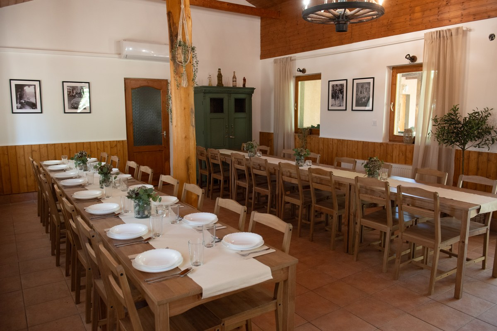
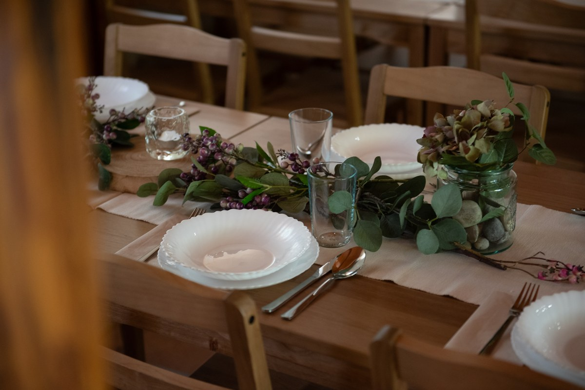
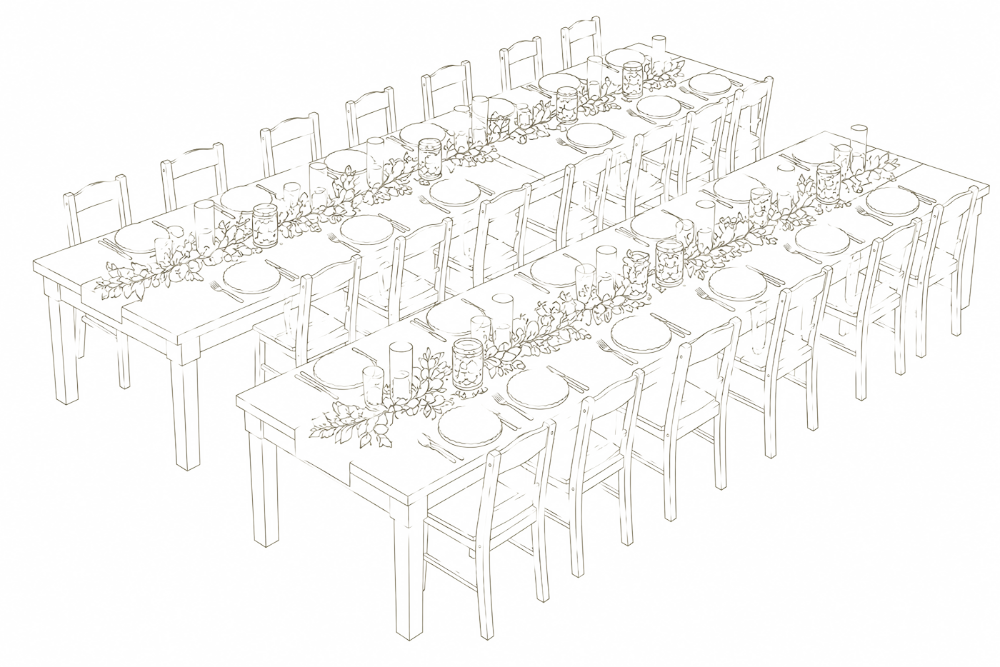
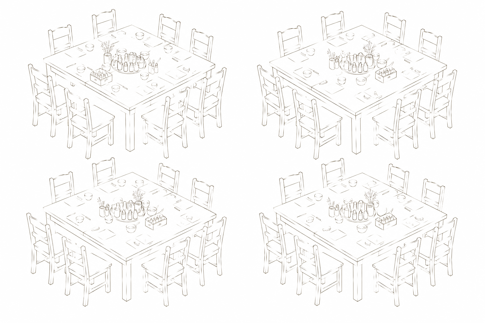
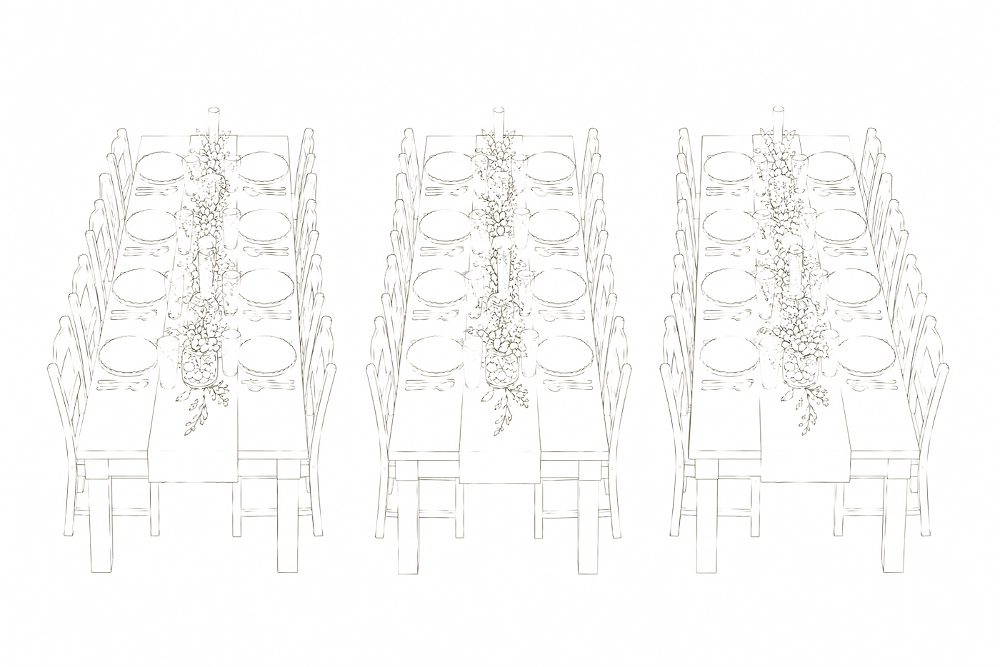

Helyszín
Otthonos tér a különleges alkalmakhoz
Maximum 50 fő befogadására alkalmas, meghitt, természetes hangulatú tér közvetlenül a Farmer horgásztó partján.

A terem karaktere
A fa gerendák, a természetes anyagok és a visszafogott színek adják a terem karakterét – olyan környezetet szerettünk volna kialakítani, amely önmagában is hangulatos, mégis könnyen alakítható az adott eseményhez.
Legyen szó születésnapról, családi ünnepről, kisebb esküvőről, baráti összejövetelről, workshopról vagy céges rendezvényről, a teret úgy rendezhetitek be, ahogyan az alkalomhoz a legjobban illik.
Jó időben azonban a rendezvény kiléphet a terem falai közül: a tóparti kültéri területeken nagyobb létszámú vendégsereg fogadására is van lehetőség.

Ahogy nektek a legjobb
Három elrendezés, egy tér
Az asztalok és székek szabadon átrendezhetők, így ugyanaz a terem egészen más karaktert kap.

Összetolt asztalsor, ahol mindenki egy társaság. Meghitt vacsorákhoz és kisebb esküvőkhöz.

Négy kisebb asztal, társaságonként. Születésnapokhoz és családi ünnepekhez.

Három hosszú asztal egymás mellett – a legnagyobb létszámhoz a teremben.

Minden egy helyen
A teremhez felszerelt konyha, mosdók és a rendezvényhez szükséges alapvető berendezések tartoznak. Az asztalok és székek többféle elrendezést tesznek lehetővé, így ugyanaz a tér egészen más hangulatot kaphat egy meghitt vacsorán, egy születésnapon vagy egy workshopon.
És ami igazán különlegessé teszi: ha kiléptek az ajtón, ott a tópart.
A rendezvény így nem csak a teremben zajlik. Jó időben a vízpart és a kültéri területek is az együttlét részévé válhatnak.
Amit a helyszín kínál

Maximum 50 fő
kényelmes befogadóképesség
Felszerelt konyha
a rendezvény ideje alatt használható
Asztalok és székek
a létszámnak megfelelő mennyiségben
Rugalmas elrendezés
többféle teremkialakítás lehetséges

Közvetlen vízpart
a tópart néhány lépésre
Kültéri lehetőségek
jó időben a szabadban is
Parkolás
a vendégek számára a helyszínen
Nézd meg élőben.
Szívesen megmutatjuk a termet és a tópartot – a helyszínbejárás előzetes egyeztetéssel lehetséges.
Időpontot kérek